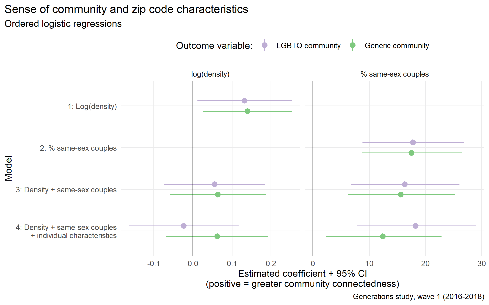
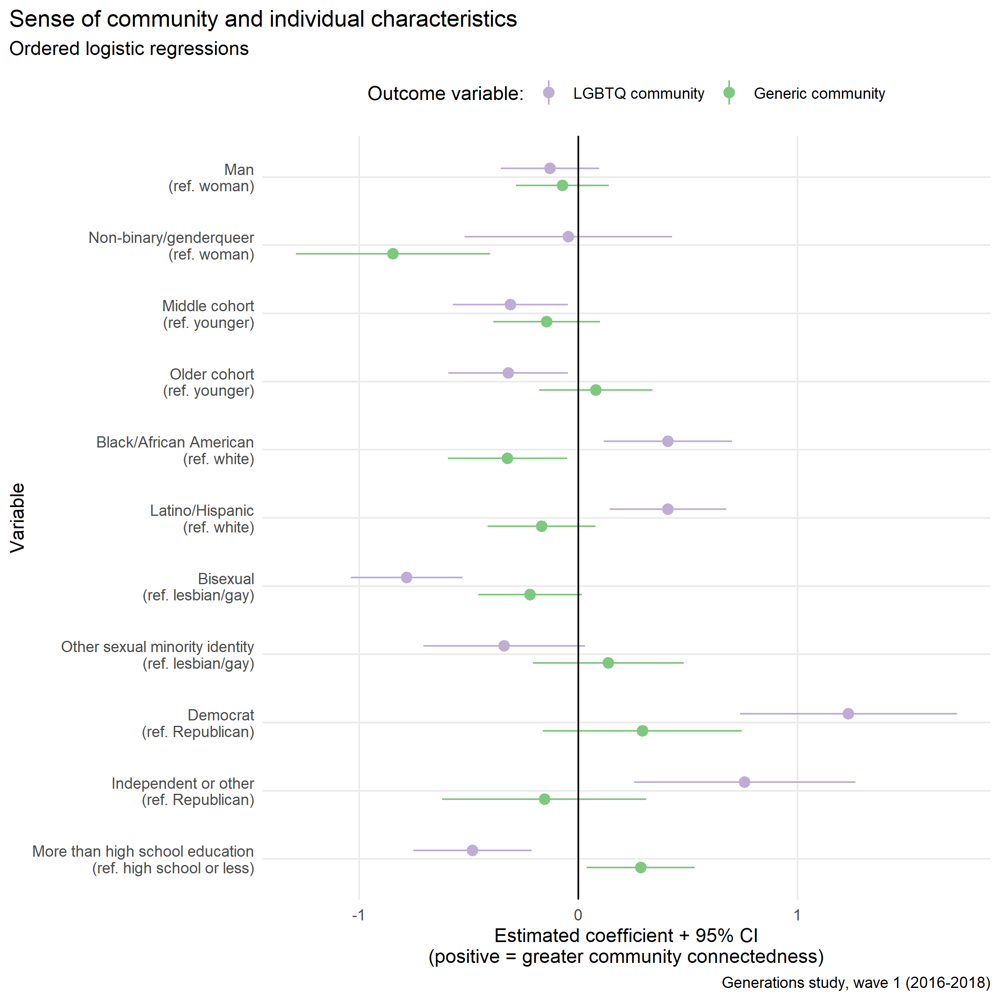
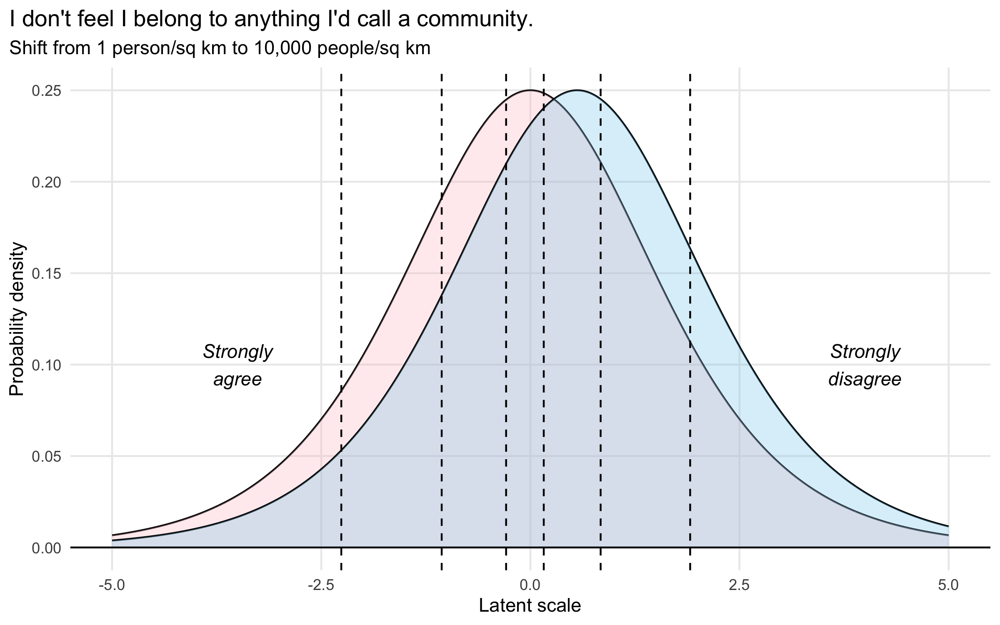
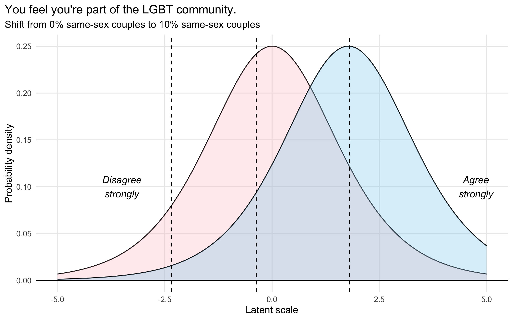
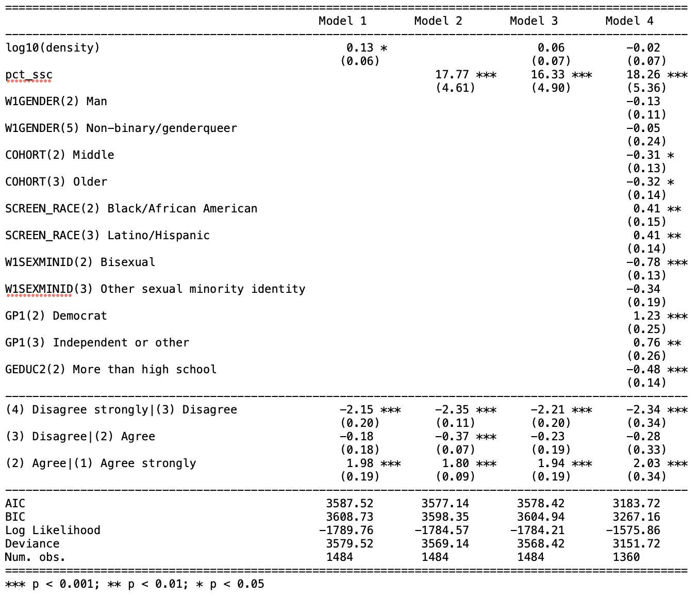
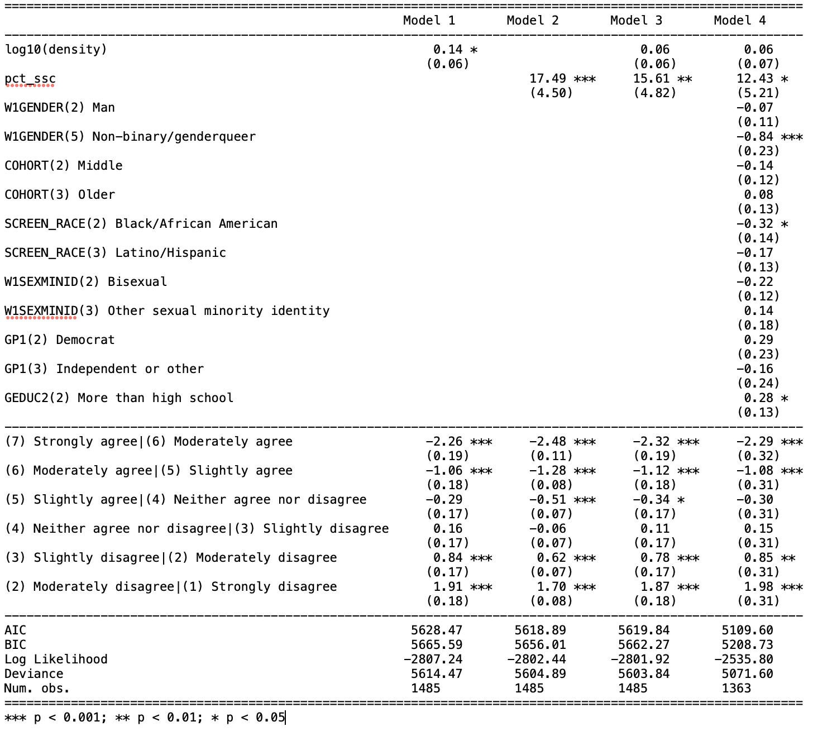

2 Density and abundance
How place characteristics shape individual sense of community for LGBQ people
2.1 Motivation
This is an informal writeup of the analysis I did for the second chapter of my dissertation over the summer, elaborating on the results I presented at ASA 2022. Below, I’ve copied the research questions and theoretical motivations from my proposal and abstract.
2.1.1 Research questions
From my prospectus defense slides.
What features of individuals and places are associated with individual sense of community for LGBTQ people?
Do dense places full of LGBTQ people and institutions facilitate a greater sense of connection to the LGBTQ community, or are those exactly the places where LGBTQ community fades into the background?
What about the diversity and heterogeneity of a place — can that contribute to a sense of connection or is it necessarily an obstacle?
2.1.2 Short version
Shared social and cultural characteristics are how community is created from identity, but what are the actual conditions that lead to strong LGBTQ communities rather than weak or nonexistent ones? In particular, how do various forms of social difference relate to individuals’ sense of connection to the LGBTQ community? Chapter 2 addresses the conditions that make LGBTQ community possible for individuals by examining variations across places as well as heterogeneity within place-based contexts. While this chapter can’t focus on expressions of community in the same way as the preceding or following chapters, it offers a parallel focus on perceived experiences of community instead.
The top-level expectation is that a dense place-based context with an abundance of queer people and institutions will facilitate a correspondingly strong sense of belonging and connectedness to the LGBTQ community for individual survey respondents. However, the qualitative literature hints at some alternative possibilities: perhaps individuals’ perceived sense of belonging and connectedness to the LGBTQ community does not correlate – or even runs counter to – the abundance, density, and diversity of LGBTQ people and institutions in a place. That would suggest that the perceptual experience of community might stand in for structural and demographic “facts on the ground” rather than complementing or arising from them. In other words, maybe San Francisco is like Brown-Saracino’s Ithaca, and ambient community there takes the place of LGBTQ community specifically. Winer (2020)’s key finding of solidarity-with-disdain might have place-based limitations as well – his interviewees, after all, come only from Southern California – in smaller and more scattered contexts LGBTQ people might not be able to afford to symbolically distance themselves from the center of the community. Finally, Forstie (2020)’s study of LGBTQ communities in small cities raises the possibility that those LGBTQ communities might be less fragmented and more cohesive, especially across lines of difference, compared to communities in larger cities.
The data sources I’ll combine allow me a unique opportunity to evaluate some theories from the qualitative literature on LGBTQ communities. While Brown-Saracino (2017) gains analytic leverage by looking at places that are very similar to each other on the surface and exploring their differences, she can’t explore the full space of places where LGBTQ people live and where they might experience community (or not). But the three kinds of place-based identities she uncovers can be mapped onto community connectedness measures like those in the Generations study. Hybrid identities and traditional lesbian communities would both be consistent with a strong sense of belonging to the LGBTQ community; “ambient community” would be signaled by high belonging in general but low LGBTQ-connectedness specifically. The sense-of-community survey measures are informative even though they can’t distinguish what, exactly, “LGBTQ community” means in a given place or what precise forms it takes. (While the Generations survey asks about connections to “the LGBT community,” actual LGBTQ communities are often multiple or fragmented.)
To sort out some of these competing expectations, I’ll refine my place-based covariates to distinguish central cities of metropolitan areas from peripheral areas (and, among central cities, especially the so-called “big four” from more ordinary cities) – in addition to measures of physical density, demographic diversity, and the presence of LGBTQ third places (i.e., gay bars, which I’ll obtain from Greggor Mattson). Finally, I still want to take Brown-Saracino’s ideas about place-based narratives literally and operationalize those narratives, probably by scraping text from public-facing city websites.
A few other notes about this chapter: as I’ve already discussed, one of the challenges of studying experiences of community is the slipperiness of the referent – what, in a given case, is “the community”? I also highlighted how important it is to distinguish community from identity. One of the exciting aspects of the Generations survey is that it actually captures (some of) this complexity. Most critically, it asks respondents about their connection and belonging to any community and to LGBTQ community specifically. And it also includes separate questions about LGBTQ community and identity. I plan to use the two distinct measures of community connectedness as my primary regression outcomes and include individual characteristics (including sexual orientation, gender identity, race, age) as well as place-based measures as covariates that capture potentially-salient sources of heterogeneity.
In feedback, the Generation study’s main prior finding (Meyer and Choi 2020) about community connectedness has come to the surface; namely, political affiliation seems to matter – the minority of respondents who are Republican express much less LGBTQ community connectedness than do Democratic respondents. Perhaps this means that Vaisey’s ideas about shared moral values as the key to Gemeinschaft hold up here, in that values are how an otherwise inclusive community draws its boundaries.
Sadly, I don’t think I’ll have the statistical power to estimate interactions between individual and place characteristics, though it would be logical to to think those interactions exist.
2.1.3 Long version
Included for completeness, feel free to skim or skip to the results writeup.
Motivating this work is the fact that an individual’s sense of community is shaped by structural features of the contexts in which they are embedded (Boessen et al. 2014). Purely virtual and distributed communities (Driskell and Lyon 2002) aside, experiences of community are typically local and emplaced (Brint 2001). At the broadest level, then, place characteristics shape how and whether individuals experience a strong sense of community. Place characteristics most obviously matter for place attachment; but they also matter for other objects of belonging, like identity-based groups. While other work might examine how the meaning and interpretation of “community” varies in a qualitative sense, this project focuses on the strength or magnitude of sense of community without addressing how its meaning might vary.
LGBTQ people provide a particularly interesting case to study the strength of community. For marginalized and minority groups, the stakes of belonging are heightened in light of a history of stigma and exclusion; the place characteristics that matter might differ from those that facilitate community for the generic, unmarked majority (see Zerubavel 2018 for a discussion of markedness). For instance, whether homogeneity lead to a feeling of cohesion, or whether it is instead stifling, depends on who a person is. Because they have the potential to be unique, I’m interested in what LGBTQ experiences of community might reveal about the relationship between place and community.1 Moreover, LGBTQ attachments to community are emplaced, both through the existence of archetypical institutions like gay bars (Mattson 2020) and gayborhoods (Ghaziani 2014) as well as through broader and more diffuse constellations of significant places (Gieseking 2020). By linking features of place to individual LGBTQ experiences, I hope to uncover the conditions that facilitate sense of community. I imagine three key factors to be especially relevant: density, diversity, and place-based culture.
I expect density to be a net positive. By density, I simply mean physical density of people; since Durkheim, sociologists recognized that this physical density facilitates a social density of interactions (Durkheim [1912] 2001; Tavory 2016). I expect the densest places to entail the strongest sense of community for LGBTQ people. Cities are historically entwined with the formation of collective LGBTQ identity (D’Emilio 1992), so much so that LGBTQ studies has been critiqued for its metronormative emphasis (Halberstam 2005). More broadly, cities have been argued to facilitate either individualism (Simmel [1903] 1971) or collective life (Jacobs 1961). A main mechanism for density to contribute to a sense of community for LGBTQ people is movement, especially given that most LGBTQ people do not necessarily grow up around many other queer people or with access to queer spaces. This stereotypical story of the attractive force of gay urban life (D’Emilio 1992) has also been called the “great gay migration” (Weston 1995), although that’s a fraught analogy to make. In any case, it’s easy to imagine concentrations of LGBTQ life as an attractive force, leading queer people to concentrate around each other and to individually experience a greater sense of community as a result. But maybe queer migration is also part of what’s been called the “big sort” (Bishop 2009), and those that remain are positively self-selected as well. If both rural and urban LGBTQ people have the resources and opportunities to be where they feel that they can belong, then differences between them in sense of community might be lessened (see some initial evidence below).
The relationship between community and diversity, even for LGBTQ people, seems potentially more ambivalent and heterogeneous. I mean diversity in a multidimensional social space (maybe akin to Lee et al. 2021); not just diversity in terms of sexuality, not just ethnoracial diversity; everything that contributes to the perception that a place has many kinds of people. It is not obvious that this contributes positively to a sense of community in itself or if it just goes along with density or other traits; for instance, people belonging to social minority groups, like sexual minorities, might incidentally like more diverse places simply because those places have more people like them.
But it’s possible to imagine that the opposite could hold; that there are people for whom diversity itself positively contributes to their sense of community, of belonging to an identity group and/or to a place. While I do not expect this to be universal, it is a possibility I’m intrigued by: the experience and existence of community is predicated on something being shared among people, but can shared difference be enough? There is qualitative evidence that LGBTQ people can build community across difference in various ways, even creating a shared sense of hybrid and plural identities (Brown-Saracino 2017; Orne 2017). In a different line of evidence, thorough critiques (Abascal and Baldassarri 2015; Baldassarri and Abascal 2020) have recently shown that diversity – ethnoracial diversity, specifically – is not the intrinsic obstacle to social trust that it was once asserted to be (Putnam 2007). The data I can assemble may not sort out the stakes of solidarity across difference in diverse contexts, but I can start to assess the possibilities and variations.
Of course, those two factors aren’t exhaustive; material resources and institutions – especially the presence and concentrations of third places like bars and coffee shops (Oldenburg 1998) – no doubt positively contribute to a sense of community as well. Assembling all of these place variables at the zip code and other levels of geography is relatively straightforward; I can create population density and other spatial variables like diversity indices from the American Community Survey and other Census Bureau data sources. The locations of third places like (gay) bars and coffee shops might come from web APIs like Yelp’s, which provide contemporary estimates. (For previous work, I’ve created a geocoded data set of gay bars using Web Archive pages from 2007, but 2022 is closer in time to the 2016-2019 time period of the Generations study.) Note, however, that these contextual variables are all quite broad; I don’t aim to measure the composition of individual social worlds – the frequency of interaction, the social characteristics of alters, the establishments people frequent; place characteristics only measure the background context in which those social worlds take place.
But these structural and demographic characteristics still aren’t enough; they’re also overly broad in that they don’t capture the specificity of a particular place (Gieryn 2000) – which might be more or less conducive to community. This remainder can be conceptualized as place-based culture (Brown-Saracino 2017). To go beyond the catchall of culture, I hope to explain some of those residual unknowns by operationalizing the narratives associated with a place. This captures the perception and feeling of a place, at least a widely experienced version of it (i.e. declarative, public culture, in terms of Lizardo (2017)’s taxonomy). For instance, it’s possible to tell a story about a place where queer people are visible and abundant, a central part of the place’s appeal. Place narratives might even mediate the relation between structural features and individual experiences of community; e.g., it’s possible to tell a story about a place where diversity is a positive good rather than an obstacle to building community. Ethnographers say these stories matter (Brown-Saracino 2017; Orne 2017), that they’re part of how community plays out differently in practice even in places that appear similar on the surface – both in what exactly “community” comes to mean in a given place, and how strong the sense of belonging is for the individuals there.
Measuring place-based cultural narratives is more ambitious than measuring structural and demographic features. To do so, I need geocoded text data that conveys public-facing representations of a place. I can imagine two types of digital data that might contain general place-based narratives. First, official tourism-oriented websites; Brown-Saracino (2017) discusses the parallels between those official stories and the narratives her LBQ respondents personally hold, arguing that they arise from the same broad cultural source. These webpages often take the form of “Visit [place name]”, for instance https://visitseattle.org/ or https://www.visitithaca.com/ – both of which prominently feature LGBTQ themes to highlight their highly visible LGBTQ communities. Systematically searching for and scraping the text from those webpages2 would provide a corpus of narratives about cities, towns and other local regions. A second, more geographically granular option, would be geocoded Wikipedia pages. These are less official, but more organic, and despite important systematic biases still provide critical information about what a place is known for. With either corpus, I can fit topic models to distill common and unique themes, and then use those topic prevalences as covariates in regression models.
2.1.4 Notes
- The short version of the motivation comes from the revision memo for my prospectus. The longer version of my theoretical expectations comes from the full prospectus document. It may be redundant, but I included it anyway.
- After encountering the data, I’m less confident in my ability to disentangle diversity from minority abundance, so I may need to deemphasize that part of the motivation. Feel free to prove me wrong, though.
- Greggor never got around to sending me the gay bar data. Maybe that’s a problem to leave for future work, if I ever have the time and energy for collaborations again.
- As you’ll see below, I haven’t tackled the cultural narratives piece at all. That’s a unique idea; I still like it, but I don’t know whether I’ll have the time to implement it.
2.2 Methods
I started simple, focusing on two place-based covariates and their associations with two parallel outcomes.
The two covariates I start with are population density and percent same-sex couple households, both at the zip code (i.e., ZCTA) level. Physical density is a fundamental trait of urban environments [cite: Wirth, Fischer]. Density (in individuals per square kilometer) is a right-skewed distribution, so I log-transform it. Minority abundance and diversity are difficult to disentangle empirically, so I start with the simpler of the two. It’s an open question whether the proportion or count of same-sex couples is theoretically more important, but I choose to calculate and model with the proportion.
(Note: Because I pull same-sex couple counts and household counts from separate ACS tables, a few zip codes have nonsensical or extreme values for percent same-sex couples, which I drop from summary statistics. These are zip codes with small populations and/or high proportions of residents in group quarters.)
My two outcomes are single survey questions, not full composite scales. Scales derived from multiple questions may be more robust, but single questions have more straightforward interpretations. One question measures generic belonging or connectedness to any community, the other measures connectedness to the LGBT community specifically. The latter ought to logically entail the former, but any divergences are noteworthy.
I fit a series of ordinal models, first with each covariate separately, then with the two together, and then with a set of individual-level variables as controls, for a total of 8 models altogether. Building up to the most complex model lets me better understand the associations I observe.
2.3 Results


Population density. On its own, increasing population density in a respondent’s zip code has a positive association both with belonging to the LGBT community (b = .13), and with belonging to any community in general (b = .14). On the latent variable scales, a shift from 1 person per sq km to 10,000 people per sq km (arbitrary extreme, but plausible, values) is predicted to move each outcome by .52 and .56 respectively. For LGBT belonging, this doesn’t change the mean predicted category (still “Agree”); for generic belonging, this shifts the mean predicted category from “Neither agree nor disagree” to “Slightly disagree” (the direction of the scale is reversed). [TODO: simulate predicted probabilities and first differences with confidence intervals; what I’ve done here treats the coefficient and cutpoint estimates as if they had no uncertainty.]

Percent same-sex couples. The percentage of same-sex couples in a respondent’s zip code is also positively associated with belonging to the LGBT community (b = 17.77), and with belonging to any community in general (b = 17.49). On the latent variable scales, a shift from 0% to 10% same-sex couples is predicted to move each outcome by 1.777 and 1.749 respectively. (Very few zip codes have a proportion of same-sex couple households as high as 10%; these are places like the Castro, or Provincetown, or Palm Springs.) That shift is nearly enough to move the mean predicted category for LGBT belonging to “Agree strongly.” For generic belonging, the mean category shifts from “Slightly disagree” to “Strongly disagree.” (The estimated cutpoints differ slightly from the previous models, so the mean category at baseline is not necessarily the same.)

Both covariates together. The estimated coefficient for density more than halves (to 0.06, for both outcomes) and is no longer statistically distinguishable from zero. By contrast, the estimated coefficient for percent same-sex couples changes little (decreasing slightly to 16.33 and 15.61 respectively). The estimated cutpoints shift somewhat but are relatively stable.
Both covariates, with individual characteristics. With six demographic control variables (gender, age, race, sexual identity, political affiliation, and education), the coefficients for the two place characteristics do not change much. The point estimate for the coefficient for density for the LGBT belonging outcome is actually negative, at -0.02, but indistinguishable from zero; for generic belonging it is 0.06 and still not statistically significant. The coefficient for percent same-sex couples is 18.26 (SE ±5.36) for LGBT belonging and 12.43 (SE ±5.21) for generic belonging. [TODO: is there a way to simulate or test whether the LGBT-belonging coefficient really does have a larger magnitude?]
Individual characteristics. The individual controls themselves show associations with the two outcomes in some cases. Unlike with the two place characteristics, at times there are clear differences between the two outcomes, even differences in the signs of coefficients.
- Gender: no association with LGBT belonging; non-binary respondents report lower generic belonging than men or women, all else equal.
- Age: middle and older cohorts both report less LGBT belonging than the youngest cohort, all else equal. No association with generic belonging.
- Race: Black and Latinx respondents report higher LGBT belonging than white respondents, all else equal. Black respondents report less generic belonging than white respondents.
- Sexual identity: Bisexual respondents report less LGBT belonging than lesbian/gay respondents. Otherwise, no statistically significant differences.
- Political affiliation: Republicans report much lower LGBT belonging than Democrats or independents, all else equal. No statistically significant differences for generic belonging.
- Education: respondents with higher levels of education report less LGBT belonging but more generic belonging, all else equal.
2.4 Interpretation
It seemed like population density itself could be positively associated with community connectedness and belonging for LGB people — and it is, in a bivariate model. But that association does not hold up once other factors are taken into account. Other individual and place characteristics that are themselves associated with physical density must mediate that association. And even in the bivariate case, there isn’t a large difference in levels of belonging between the densest and least dense places.
By contrast, the prevalence of other LGBTQ people, as proxied with same-sex couples, is positively associated with community connectedness for LGB people. This remains true even when other factors are controlled for. Places with truly high proportions of same-sex couples are rare, but the models all predict that in these places respondents will report a heightened sense of community connectedness, both to the LGBT community and in general.
This means that the presence of other LGBTQ people specifically matters more than the mere concentration of people in general. (Those two factors are weakly correlated, even at the zip code level.) Given the extent that the environments of the densest urban places differ from suburban and rural locations, it is surprising that density has so little discernable association with sense of community. This is especially surprising given theory that urban life is thought to facilitate a diversity of subcultures [cite: Fischer] and that urban contexts have been key for the historical emergence of LGBTQ subcultures specifically [cite: D’Emilio, Bérubé, Orne, etc.]. But even if cities did in fact facilitate LGBTQ people coming together to form communities in the first place, cross-sectionally it is the current presence of those LGBTQ people, not the density of the place, that is highly important for experiencing a connection to community.
Individual characteristics, while not the focus of this project, are worth interpreting and contextualizing as well. (Trends for individual-level covariates are identical in models without the two place characteristics, so the incorporation of place-level covariates does not change the interpretation.)
Gender and sexual identity stand out as much for what doesn’t matter as for what does. It is odd and noteworthy that the privileges accorded to cisgender gay men, including their greater representation in and access to institutions like gay bars, etc., do not translate into a greater sense of being part of the LGBT community. Perhaps this is Winer’s solidarity-with-disdain in action. It is less surprising that bi individuals report feeling less a part of the LGBT community than others; well-known phenomena of biphobia and/or bi erasure are likely to be at play here. Finally, while there are no differences between men and women, non-binary individuals experience less belonging only to community in general, not to the LGBT community specifically. It may be that LGBT spaces provide something of a refuge from a world that is otherwise rigidly organized around maintaining a gender binary – even if those spaces are often structured by gender as well. (A gender X sexual identity interaction might be worth investigating to more precisely tackle the question of differences in belonging between gay men, lesbians, and bi people and queer people of all genders.)
The remaining four covariates — age, race, political affiliation, and education — lead to a range of interpretations, from the unsurprising to the puzzling. It is not surprising that the youngest cohort feels more a part of the LGBT community than older cohorts, having come of age with greater societal acceptance, higher queer visibility, and more access to queer spaces (which privilege youth in a variety of ways). Nor is it surprising that political affiliation has such a strong association with LGBT belonging. The overwhelming majority of LGBQ respondents in the survey (and LGBTQ people in general) are Democrats or independents; to the extent that political values shape what the LGBT community is, it makes sense that Republican LGBT people would feel alienated from it. Next, given the realities of sexual racism [cite: Orne, Held, Stacey & Forbes, etc.], and the fact that many queer spaces – from gay bars to entire gay neighborhoods – are structured by whiteness, it would be reasonable to expect that queer people of color would feel less a part of the LGBT community. Actually, however, Black and Latinx respondents report a greater sense of being a part of the LGBT community than white respondents (even though Black respondents report less belonging in general). I don’t have a solid interpretation for this yet. Finally, even though LGBTQ people are more educated on average than their straight, cisgender counterparts [cite: Mittleman], LGBQ people with lower educational attainment report a greater sense of being a part of the LGBT community – but, paradoxically, less belonging overall. I might have thought that higher levels of education might offer more access to community, so I don’t know how to make sense of these opposing trends. Of course, all of these individual covariates have their own correlations with each other, but the associations I’ve investigated so far hold up in bivariate analyses as well.
2.5 Next steps
I see two different ways to extend the work I’ve already done: deepen my existing analyses and probe them for robustness, or broaden the scope of the place-based characteristics I incorporate into my models.
For depth and robustness, I might first think more carefully about density. Am I confident that density doesn’t matter? Or am I just not thinking about and operationalizing it the right way? A few concerns:
First, the functional form of the association is potentially at issue. The log transformation is more data-driven than theoretically-driven, though it does capture the association with community connectedness better than a linear relationship. Maybe a quadratic model or something similar would better encode my theoretical expectations.
Second, there’s the issue of scale (i.e., the modifiable areal unit problem). Is zip-code-level the right choice, or are higher-level scales more meaningful? Geographers and urban scholars advise that using MSA-level density per se isn’t a valid choice, because differences in land area between counties (and therefore MSAs) are so stark between different parts of the US (the West and the rest, in particular). But the overall population or overall density people experience in an area might matter on top of or instead of the the local experience in a zip code itself. Population-weighted densities get closer to what the average person experiences; it would be easiest to calculate these MSA-level values (or county-level values?) from zip codes, but feasible to start from tract or block levels instead – even though I don’t know what tracts/blocks respondents actually live in. Of course, any MSA-level variables exclude the minority of respondents living outside MSA/μSA areas.
- Zip codes are, of course, an even weaker (too-large) proxy for neighborhoods than Census tracts, so if neighborhood-level density is what matters, then the lack of granularity in the survey geocoding may obscure the relationship between density and community as well. This is a problem if LGBTQ people systematically are more likely to live in the denser parts of their zip codes. (Looking at a handful of gayborhood examples – 98102/98122 in Seattle, 94114 in San Francisco, and 60657 in Chicago – I do believe that the gayborhoods systematically fall in the denser parts of those zip codes.)
Finally, the range of the data might limit what can be observed about density. One of the challenges using data from the United States is that we don’t observe more than a handful of really dense places. Even a city as dense as Seattle is mostly single-family, detached homes. If the benefits of density for community only take hold at San Francisco or New York-level densities (i.e., “walkable” densities), then they’ll be hard to observe from statistical models of nationally-representative US-based surveys. I had hoped a log transformation might address this, but it appears that it didn’t. It may be that a different operationalization of urbanicity — a “big 4” or “central city” indicator — might be more relevant.
A second way to make this chapter deeper and more robust involves thinking more carefully about the prevalence/abundance of sexual minority people, and how this might relate theoretically and empirically to diversity/heterogeneity. To me, it’s more intuitive that either high numbers or high proportions of LGBTQ people would be beneficial for a sense of belonging to the LGBT community than that integration between same-sex and different-sex couples would have that same kind of effect. At the same time, I don’t want to undersell my finding. Affective attachment to LGBT community might have been independent of or even inversely related to the actual presence of other LGBTQ people; it could have been more of a symbolic than a material phenomenon. Prior research on LGBTQ people in small cities, or on solidarity with disdain in large metro areas, might have predicted a different result than what I actually found. I’m not sure how to go beyond prevalence/abundance and meaningfully account for any added impact of diversity. Empirically, zip-code-level entropy seems highly correlated with minority prevalence (I think that just mathematically how entropy works), and again the conceptual reason that MSA-level integration would have a positive effect on belonging isn’t clear – maybe opposite effects on generic and LGBT-specific belonging, if we’re thinking about assimilation. Other measures of diversity – racial/ethnic diversity, economic integration, etc. – might provide additional signals of a tolerant or welcoming environment, but there may be other ways of getting at those same characteristics. In addition to the conceptual and empirical issues, part of the challenge for me is methodological – I don’t have a clear sense for how measures of entropy and indices of dissimilarity work, exactly, or how it’s reasonable to interpret them.
Instead of or in addition to focusing on other ways of understanding the two place covariates I’ve analyzed so far, I might expand the scope of place-based characteristics I include. My key innovation would be to incorporate cultural rather than demographic or physical features of places. This could be as simple as looking at residual variation between places in a multilevel model and chalking up unobserved differences to “culture,” or it could involve an attempt to actually operationalize place-based culture.
My best idea so far for this is to take literally Brown-Saracino’s (2017) qualitative observations about the power of place-based cultural narratives. She notes the affinity and resonance between her interviewees’ stories about the places they live and the more official stories highlighted in travel guides and websites. I could search for and scrape text from those websites and then quantify the prevalence of different themes using a simple topic model. (This would resonate too with the precedent of using gay travel guides to study LGBTQ life.)Once again, the scale at which these narratives might be the most salient is unclear, but the (Census) place or city level seems most promising to start with. To frame this issue, for instance, how relevant are stories about Seattle to LGBTQ people who live in Bellevue or Tacoma?
In a similar vein – given the cultural dimension of politics, and given the importance of political affiliation at the individual level, place-based measures of political climate (e.g., 2016 Trump vote share) seem important to include. As with every place characteristic, there’s a debate to be had about whether the zip code or MSA level is more salient.
Alongside adding covariates and reevaluating how I operationalize them, I might bring the individual traits further into focus by considering how they interact with place characteristics, as it’s reasonable to think that they would. But, as my covariates and modeling strategies get more complex, I’ll be more and more limited by the number of respondents in the data. Of course, with only 1484 respondents, I don’t observe every zip code in the country; though I do get more than one respondent per location, especially at higher levels of aggregation like MSA. (You could even imagine a spatial model estimating kind of a “risk surface” for belonging, as Jon Wakefield would put it, but that seems unnecessarily complex for little added benefit.) At some point, we’ll have to feel confident that I’ve learned enough for one dissertation chapter, rather than trying every model specification imaginable.
2.6 Appendix: Tables
2.6.1 Outcome 1: You feel you’re part of the LGBT community.

2.6.2 Outcome 2: I don’t feel I belong to anything I’d call a community.

It is no doubt possible that ethnic, racial, religious, or political minorities might share some commonalities with sexual minorities, but I prefer to focus on one axis of difference as a starting point and not overgeneralize. An appropriately intersection analysis of the LGBTQ context will of course consider how social identities like race and gender factor into the focal relationships between place characteristics and sense of community.↩︎
I have used web scraping, web crawling, and API-based data collection extensively in prior work; this is one of the unique things I can contribute beyond merely reanalyzing secondary survey data.↩︎